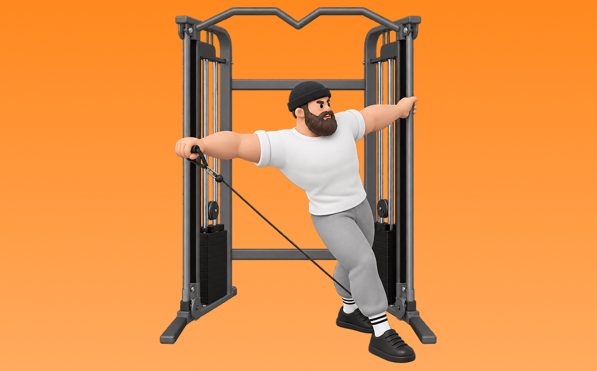

ケーブルラテラルレイズ

ケーブルラテラルレイズとは、ケーブルを使って「腕を横に上げる」動作で肩中部（三角筋中部）を鍛える種目です。可動域全体で張力が抜けにくいのが特徴で、反動を抑えてコントロールしながら反復します。肩幅を作り、逆三角形のシルエットづくりが期待できます。
- 対象部位
- 肩
- 器具
- ケーブル
- 記録形式
- 重量・回数
- 別名
- ケーブルサイドレイズ
YouTube動画
-
【筋トレ】ケーブル・サイドレイズの正しいやり方 | ボディビルチャンピオンが解説【ビーレジェンド プロテイン】
-
【初心者】マシン・ラテラルレイズの効果的なやり方 | 三角筋中部を強烈に鍛える種目【ビーレジェンド プロテイン】
-
筋トレ初心者が最初に覚えるべき肩トレのマシン使い方解説【エニタイムフィットネス】
-
【肩トレ】ケーブルマシンで行う片手のサイドレイズのやり方解説！
-
最も難しいマシン「ラテラルレイズマシン」を使いこなそう！！挙げるタイミングを参考に！【ジュラトレ肩/７種目目】
-
【三角筋】1年間ほぼ毎日サイドレイズで筋肥大したフォームと筋肥大しないフォーム【中部】
-
【間違っている人ばかり!?】肩の筋肥大に必須の正しいサイドレイズを相澤隼人が徹底解説!!
-
ケーブルサイドレイズのやり方・フォームをご紹介！肩・三角筋を鍛えるのにケーブルを使った筋トレで種類を増やそう！
YouTubeショート
-
絶対にデカくなるサイドレイズやり方#筋トレ #肩トレ #筋トレ初心者 #shoulderworkout
-
持田選手にケーブルで行うサイドレイズについてレクチャーしていてもらいました！次はどの種目の解説をやってほしいかコメントしてね！#トレーニング #筋トレ #fitness #workout
-
【今すぐやめろ】三角筋中部が全く成長しなくなるケーブルサイドレイズ(科学的肩トレ) #shorts
-
持田選手にサイドレイズについてレクチャーしていてもらいました！次はどの種目の解説をやってほしいかコメントしてね！#筋トレ #volix #トレーニング #workout #肩トレ #ちょこっと惜しい
-
ケーブルサイドレイズフォーム解説#肩トレ#ダイエット #筋トレ #パーソナルジム #サイドレイズ
-
肩をデカくしたい人必見「ラテラルレイズ」解説 #筋トレ #筋トレ初心者
-
多くのトレーニーが間違えているラテラルレイズのトレーニング方法 #ジム#フィットネス #トレーニー #ラテラルレイズ #ソネットフィットネス
-
横川くんから学ぶ肩トレ💪 ※最後の2種目はケーブルの引き方が違います（効いている部位について名言はされていませんでしたので予測です）
-
サイドレイズやり方多すぎる
-
めっちゃ肩がデカくなった今やってるメニュー！#shorts
-
【初心者必見】世界一わかりやすいサイドレイズ#プロテイン #筋肉 #筋トレ初心者 #筋トレ #fitness #肩トレ #サイドレイズ
-
最大ストレッチと収縮はケーブル一択
-
【肩トレ解説】ケーブルサイドレイズ #筋トレ解説 #肩トレ #肩トレーニング
-
こんなサイドレイズ今すぐやめて #short #youtubeshorts #プロテイン #筋肉博士 #筋トレ大学 #山本義徳 #サイドレイズ #肩トレ
-
サイドレイズを効かせるコツ！ #Shorts
-
サイドレイズはここを気をつけると全然肩が変わる！ #サイドレイズ #筋トレ #トレーニング
-
【誰でもメロン肩になれる方法がこれ】#Shorts
-
サイドレイズのやり方🔥 #筋トレ #サイドレイズ #肩トレ #筋肉社長
-
個人的に最も効果のある三角筋の種目3選を紹介 #筋トレ #フィットネス
-
☆ラテラルレイズの使い方☆
-
肩トレのやり方🔥〜インクラインサイドレイズ基礎編〜 #筋トレ #筋肉 #筋肉社長 #マッチョ #肩トレ
-
ばちばちに効く肩のリア種目
-
三角中部おすすめ種目3選【筋トレ】
-
ラテラルレイズ使い方説明動画
-
【IFBB PRO 上里選手】筋トレ初心者必見!!背中種目で注意すべきこと
-
今日の肩トレ！#筋トレ大学生 #筋トレ男子 #gymmotivation #fitnessmotivation
-
このサイドレイズはやめろ！#shorts
-
マシンを使ったショルダープレスのコツ
-
【好きぴと合トレ》サイドレイズ編
-
Rearlateral raysリアラテラルレイズ(20kg×5rep)
-
時間がない時の肩トレはコレだ！ #筋トレ
-
1分で分かるマシン解説【ラテラルレイズ】
-
【筋トレ】ケーブルリアラテラルレイズ【三角筋】#shorts
-
上里選手から学ぶケーブルサイドレイズ
-
肩トレこの3種類で十分やと思うねんけど、マッチョ警察の方々どう思う？
-
絶対にリアに入るリアレイズのやり方#筋トレ初心者 #肩トレ#ジム
-
筋トレ初心者がやるべき！肩トレ3選！#shorts
-
【1分でわかる】ラテラルレイズの使い方 #筋トレ #筋肉 #トレーニング #ジム #肩トレ #肩こり
動作方法
- 対象部位の力を抜かずに構える
- 反動を使わず、可動域を丁寧に使う
- 戻し動作をゆっくり行う
動作ポイント
- 可動域を急に狭めない
- 対象部位の緊張を保つ
ワンポイントアドバイス
- 重量よりも肩の軌道を安定させる
- 首まわりの力みを減らして行う
目的別回数設定
目的や体力に応じた一般的な目安です。無理のない範囲で調整してください。
- 筋力アップ
- 1〜5回
- 筋肥大
- 6〜12回
- 持久力アップ
- 13〜20回
YouTube動画について
動画はYouTubeの公開情報をもとに表示しています。内容は投稿者によるもので、Biggrによる監修ではありません。
アプリを入手
筋トレやトレーニングの記録はBiggrにお任せください。今すぐ無料で使い始められます。